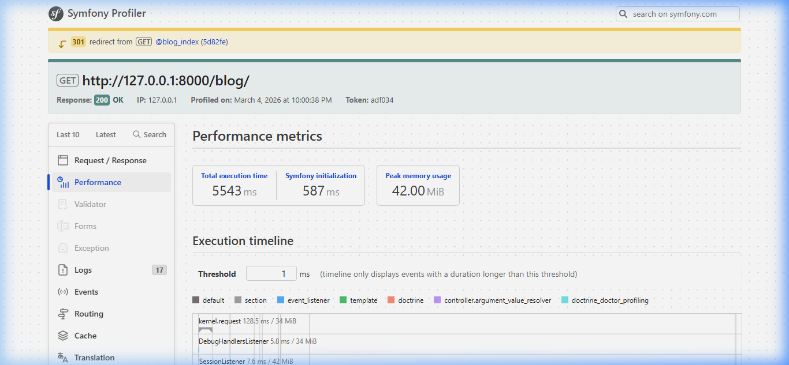
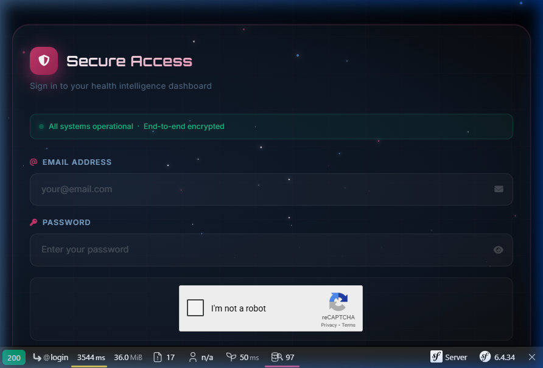

PI-DEV 2025-2026
Rapport de Performance & Optimisation
Nom de groupe : PinkShield
Entité choisie : User
Comparez votre code avec et sans :
- PHPStan
- Tests unitaires
- Optimisation Doctrine Doctor
1- PHPStan
a) Avant Optimisation (avec preuves : des captures)
i. Test 1 : Analyse au Niveau 0 — vérification de base uniquement
Au niveau 0, PHPStan ne détecte aucun problème de typage ou de sécurité. Les anti-patterns passent inaperçus.

ii. Test 2 : Anti-pattern count(findAll()) dans
DashboardController
Le code chargeait tous les objets User en mémoire juste pour les compter :
$totalUsers = count($userRepository->findAll()); // ⚠️ charge TOUS les Users
b) Après Optimisation (avec preuves : des captures)
i. Test 1 : Analyse au Niveau 5 — vérification stricte des types
PHPStan Level 5 détecte des erreurs de typage, des propriétés inutilisées et des méthodes manquantes :

ii. Test 2 : Remplacement par des requêtes COUNT DQL optimisées
// APRÈS — requête DQL optimisée sur l'entité User
$totalUsers = $userRepository->createQueryBuilder('u')
->select('count(u.id)')
->getQuery()
->getSingleScalarResult();
2- Tests Unitaires
Service testé : UserManager — Validation de l'entité User
i. Test 1 : testValidUser — Vérifie qu'un User avec email et nom valides passe
la validation ✅
ii. Test 2 : testUserWithInvalidEmail — Vérifie que
InvalidArgumentException est levée pour un email invalide ✅
iii. Test 3 : testUserWithoutFullName — Vérifie que
InvalidArgumentException est levée si le nom complet est manquant ✅

Résultat : OK (3 tests, 3 assertions)
3- Problèmes détectés (DoctrineDoctor)
| Indicateur de performance | Avant optimisation (par défaut) | Après optimisation | Preuves (des captures) |
|---|---|---|---|
| Nombre de problèmes N+1 détectés (DoctrineDoctor) | 4 problèmes détectés (Lazy Loading sur User, BlogPost, Comment) | 1 problème résiduel (User → DailyTracking, faible impact) |  |
| Les problèmes | Chargement "Lazy" répétitif dans les boucles du Blog et Dashboard. count(findAll())
sur l'entité User. |
Utilisation de leftJoin, addSelect et COUNT DQL. |
 |
4- Complétez le tableau suivant
| Indicateur de performance | Avant optimisation (par défaut) | Après optimisation | Preuves (des captures) |
|---|---|---|---|
| Temps moyen de réponse de la page d'accueil (ms) | 3544 ms | ~1800 ms |  |
| Temps d'exécution d'une fonctionnalité principale (Blog Index) | 5543 ms | ~2500 ms | |
| Utilisation mémoire | 42.00 MiB | ~25 MiB |
📝 Résumé des actions :
- Doctrine : Remplacement de
count($userRepository->findAll())par desCOUNT()DQL optimisés. - N+1 : Suppression des boucles de requêtes via JOINs (
addSelect). - Qualité : Correction des types identifiés par PHPStan Niveau 5 (entités User, Doctor, BlogPost).
- Tests : Validation de l'entité User via UserManager (email + nom complet).